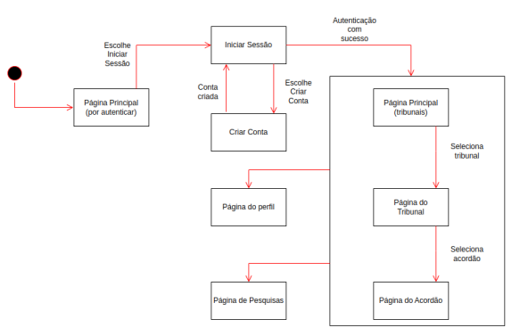

Abuso - 1
Abuso de liberdade - 3
Abuso de liberdade de expressão - 2,4
Abuso de liberdade de imprensa - 5
Abuso do poder - 3,5
Abuso do poder económico - 2

Este relatório tem como objetivo apresentar os resultados obtidos no desenvolvimento do projeto de Engenharia Web que tem como tema um Sistema de Gestão de Bases de Dados de Acordãos. O objetivo principal deste trabalho passa por conciliar os documentos JSON fornecidos, unificando-os numa única base de dados unificada, fornecendo ao utilizador uma interface de consulta e pesquisa de acordãos. Neste relatório, serão apresentadas as decisões tomadas ao longo do desenvolvimento do projeto, bem como as tecnologias utilizadas e as dificuldades encontradas.
Numa primeira fase, o grupo realizou a análise do contexto e do âmbito do projeto, adquirindo conhecimento da área através de conversas com peritos e utilizadores do sistema. Isto permitiu-nos aprender o vocabulário utilizado e averiguar quais os aspetos que poderiam ser melhorados. Com base nos objetivos/requisitos definidos pelo cliente e com base em novos requisitos identificados pelo grupo, elaboramos a seguinte lista de requisitos funcionais do sistema, subdividida em níveis de utilização:
Abrangendo todos os níveis de acesso, acrescenta-se ainda a necessidade de autenticação para o uso completo do sistema. Aqui destacam-se a possibilidade de registo/autenticação com username+password, conta Google ou conta Facebook.
Um dos primeiros passos dados no desenvolvimento da solução foi o da unificação dos campos de todas as bases de dados. Tendo exportado para ficheiro um objeto que relaciona-se cada campo com a contagem de registos que o possuem por meio de uma script Javascript, observamos a existência de mais de 10000 campos diferentes. Assim, foi necessário realizar uma análise cuidada de cada campo, verificando se este poderia ser unificado com outro campo ou até mesmo removido. Com a ajuda do portal http://www.dgsi.pt/home.nsf?OpenDatabase, identificamos grande parte dos campos como sendo originários de tabelas existentes em textos. Descartando esses campos, uma vez que não é possível tratá-los, reduzimos a lista de campos para pouco mais de 100. A partir daqui, foi necessário analisar o significado de cada campo e verificar se este poderia ser unificado com outro campo. Foi uma tarefa morosa, uma vez que requereu a consulta dos valores de cada campo em cada base de dados. Para além disso, alguns campos foram reduzidos a listas. Por exemplo, Área Temática e Área Temática 1 foram unificados numa lista de áreas temáticas. Listam-se então algumas unificações realizadas:
| Campos | Unificação |
|---|---|
| Recorrido 1/Recorrido 2 | Recorridos |
| Área Temática/Área Temática 1/Área Temática 2 | Áreas Temática |
| Referência de Publicação/Referência Publicação 1/Referência Publicação 2 | Referências de Publicação |
| Normas Julgadas Inconst./Normas Declaradas Inconst. | Normas Declaradas Inconst. |
| Secção/Juízo ou Secção | Juízo ou Secção |
De notar que alguns campos que, à primeira vista, pareciam unificáveis (como 'Data do Acordão' e 'Data da Decisão Singular'), não o o foram por apresentarem significado ligeiramente diferente. Um acordão implica um acordo entre pelo menos 2 juízes, enquanto que uma decisão Singular é tomada por apenas um magistrado.
Para além dos campos identificados, foram adicionados outros campos no modelo de um acordão do mongoose. O campo _id é um campo obrigatório, que identifica cada acordão de forma única. Este campo é autoincrementado sempre que inserimos um novo registo na BD. Numa retrospetiva do projeto, este campo poderia ter sido substituído um id criado pelo próprio mongoDB, uma vez que este é mais eficiente e não requer controlo por parte do programador. Por fim, o campo ProducerId tem como finalidade mapear cada registo ao produtor que eventualmente o criou.
Paralelamente ao processo de tratamento dos dados, foi elaborado o serviço de autenticação. Este tem como objetivo permitir aos utilizadores autenticarem-se e registarem-se na aplicação com diferentes níveis de acesso. A coleção dos utilizadores é formada por documentos com os seguintes campos:
Conceptualmente, este serviço é uma API para a coleção users da base de dados. Assim, deverá fornecer as seguintes rotas:
| Rota | Descrição |
|---|---|
| GET /users | Devolve todos os utilizadores da BD |
| GET /users/facebook | Inicia o processo de autenticação com o facebook |
| GET /users/google/ | Inicia o processo de autenticação com o google |
| GET /users/:id/history | Devolve o histórico do utilizador passado por parâmetro |
| GET /users/:id/favorites | Devolve os favoritos do utilizador passado por parâmetro |
| GET /users/:id | Devolve um utilizador |
| POST /users | Adiciona um utilizador à BD (requer autenticação) |
| POST /users/register | Adiciona um utilizador à BD (não requer autenticação) |
| POST /users/login | Autentica um utilizador |
| PUT /users/:id | Altera um utilizador na BD |
| PUT /users/:id/desativar | Desativa a conta de um utilizador |
| PUT /users/:id/ativar | Reativa a conta de um utilizador |
| PUT /users/:id/password | Altera a password de um utilizador |
| PUT /users/:id/history | Adiciona um processo ao histórico do utilizador |
| PUT /users/:id/favorites | Adicionar um processo aos favoritos, juntamente com a descrição |
| PUT /users/:id/removeFavorite | Remove um processo dos favoritos |
| DELETE /users/:id | Remove um utilizador da BD |
Tal como acontecerá na API, várias destas rotas deverão estar protegidas.
Genericamente, uma API é uma peça de software que fornece funcionalidade sobre um serviço. Na nossa aplicação, a API REST permite-nos aceder à(s) base(s) de dados, fornecendo métodos para a realização de operações CRUD na coleção dos acordãos da BD. A seguir listam-se algumas das rotas disponíveis:
| Rota | Descrição |
|---|---|
| GET /api/acordaos | Devolve todos os acordãos da BD, com base na querystring |
| GET /api/acordaos/tribunais | Devolve todos os tribunais da BD, juntamente com a designação para a sua sigla |
| GET /api/acordaos/:id | Devolve o acordão com o id passado por parâmetro |
| GET /api/acordaos/apensos/:n_processo | Devolve os acordãos com o respetivo número de processo |
| GET /api/currentId | Devolve o próximo id a ser usado na BD |
| GET /postFile/:file_name | Ordena o envio de um ficheiro JSON para a BD |
| POST /api/acordaos | Adiciona um novo acordão à BD |
| PUT /api/acordaos/:id | Atualiza um acordão na BD |
| DELETE /api/acordaos/:id | Elimina um acordão da BD |
Relativamente à primeira rota (/api/acordaos) esta pode ser complementada com uma query string com os seguintes parâmetros:
Relativamente à paginação, importa referir que o resultado da rota /api/acordaos devolve um object JSON com os seguintes campos:
Uma primeira abordagem ao problema das pesquisas consistiu na nossa própria implementação da pesquisa em formato "Texto Livre" e da pesquisa na taxonomia de descritores.
A taxonomia de descritores foi implementada como uma árvore de termos, em que estes são dispostos de forma hierárquica, de modo que nos ramos superiores da árvore encontram-se termos mais gerais e nos ramos inferiores termos relativos a descritores mais específicos. O critério de separação dos termos foi a existência de contectores sintáticos como proposições (simples ou contraídas) ou determinantes. Por exemplo, consideremos o seguinte mapeamento de descritores:
Abuso - 1
Abuso de liberdade - 3
Abuso de liberdade de expressão - 2,4
Abuso de liberdade de imprensa - 5
Abuso do poder - 3,5
Abuso do poder económico - 2
Nexte contexto, uma pesquisa nesta árvore pelo descritor "Abuso de liberdade" devolveria os processos 2,3,4 e 5.
Relativamente à pesquisa livre, pretendíamos ser capazes de mapear, para cada palavra encontrada, os registos onde esta aparecia, criando um dicionário de palavras-chave. Apesar de eficaz, esta abordagem tornou-se ineficiente dada a enorme quantidade de registos e, por conseguinte, de palavras. Assim, optamos por utilizar uma ferramenta externa, o Algolia, que nos permite realizar pesquisas em texto livre de uma forma bem mais otimizada, recorrendo a uma base de dados externa.
A base de dados de suporte a esta ferramenta daria suporte às operações de pesquisa e, como tal, deverá estar 100% concordante com a base de dados principal, em mongoDB. Assim, para cada operação de alteração de dados na base de dados principal, deverá ser realizada uma operação equivalente na base de dados da Algolia.
Um dos maiores desafios encontrados nesta fase deveu-se às restrições impostas por este serviço quanto ao tamanho dos registos. Pelo facto de, na versão gratuíta, os registos não poderem ultrapassar os 10Kb, foi necessário realizar a divisão dos mesmos em registos mais pequenos. Por consequência, nas operações de consulta, será necessário realizar a junção dos registos.
Este mecanismo foi particularmente relevante aquando do envio de ficheiros JSON para a base de dados. Dada a dimensão de alguns destes ficheiros, a leitura dos mesmos para memória de forma integral não foi possível, pelo que recorremos à biblioteca stream-json para ler os registos de acordãos em forma de stream. Para realizar esta operação de forma ainda mais eficiente, outra estratégia usada foi a de envio de registos em batches.
A interface é o serviço que expõe as páginas que o cliente pode aceder para interagir com o sistema. As páginas devem, por isso, facilitar o cliente nesse processo. Para tal, a interface deve ser intuitiva e de fácil utilização. O processo de desenvolvimento deste serviço começou pela elaboração de alguns mockups e pelo mapa de navegação que a seguir se apresenta:
A estrutura das páginas e o seu conteúdo foi realizada em pug e estilizada com templates bootstrap. Finalmente, foi adicionada alguma funcionalidade adicional com o uso de código Javascript.
Para cada página foi adicionada uma rota específica, tal como podemos ver na tabela seguinte:
| Rota | Página |
|---|---|
| GET / | Página principal/Tribunais |
| GET /pesquisas | Página de pesquisas geral |
| GET /acordaos | Página com os acordãos (pode conter querystring) |
| GET /acordaos/:id | Página do acordão |
| GET /acordaos/novo | Formulário de inserção de um novo acordão |
| GET /acordaosProducer/:id | Página com os acordãos de um certo produtor |
| GET /acordaos/edit/:id | Página de edição de um acordão |
| GET /users/login | Formulário de autenticação |
| GET /users/register | Página de registo |
| GET /users/resetPassword | Página de reposição de password |
| GET /users/:id | Página do Perfil do utilizador |
| GET /users/history/:id | Página com o histórico do utilizador |
| GET /users/favourites/:id | Página com os favoritos do utilizador |
De notar que, para além destas rotas, foram adicionadas rotas para sinalização da execução de operações, como remoção de um acordão:
| Rota | Descrição |
|---|---|
| GET /acordaos/delete/:id | Remoção de um acordão |
| POST /files | Envio de um ficheiro JSON |
| POST /description/:user_id/:acordao_id | Consumidor adicionou uma descrição a um acordão |
| POST /acordaos/novo | Envio de um novo acordão |
| POST /acordaos/edit | Envio da edição de um acordão |
Como forma de facilitar o arranque da aplicação, foi elaborado um ficheiro docker-compose.yml responsável por criar e orquestrar os serviços que suportam a aplicação em diferentes docker containers. As portas de funciomento de cada serviço são as seguintes:
| Serviço | Porta | |
|---|---|---|
| API | 8001 | |
| Autenticação | 8002 | |
| Interface | 8003 | |
| MongoDB | 27017 |
Para iniciar a aplicação, basta executar o seguinte comando na pasta raiz do projeto: docker compose build
Em seguida, abrindo um browser e inserindo o url 'localhost:8003 ter-se-á acesso à página principal da aplicação.
Em suma, neste projeto pudemos realmente aprender como se constroi uma aplicação web assente em vários microserviços que se articulam entre si para fornecer um serviço único para o cliente. Durante o processo de desenvolvimento, deparámo-nos com algumas dificuldades como a necessidade de articulação entre duas bases de dados. Contudo, acreditamos que as dificuldades foram ultrapassadas com sucesso, o que contribuiu para que fossem atingidos todos os objetivos estipulados para o projeto.